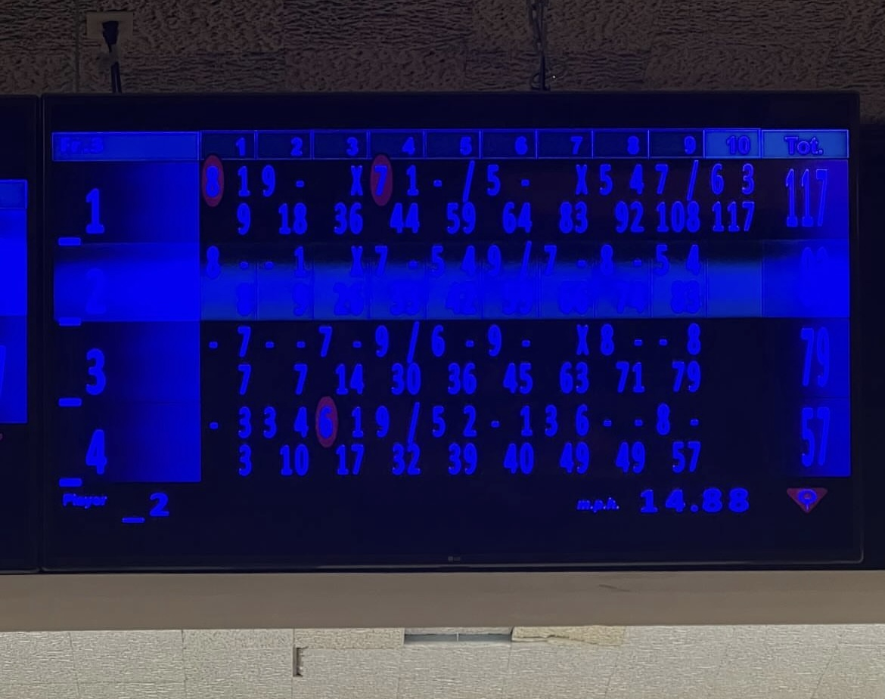

Who is Emily?
From a young age, I've been deeply passionate about computer science— inspired by both of my parents, who are software developers. Growing up in this environment, I always knew that this field was the path I wanted to follow. My goal is to leverage my skills to make meaningful contributions that have a positive impact on the world.
Hobbies & Likes
Outside of CS, I have many hobbies; including tennis, gymming, journaling, cooking, reading, snowboarding, golfing, thrifting, and bowling. I also enjoy listening to music, hanging out with my friends, watching movies, playing video games, and walking my dog, Tofu!
Here is an article from when I competed in CIF-SS Division 3 finals in high school!
Let's connect!
- ▸ linkedin: in/emilytrnn/
- ▸ email: emilytt4@uci.edu
- ▸ github: @emilytrnn
- ▸ spotify: @guacaemoly
- ▸ twitter: @emilytrnn